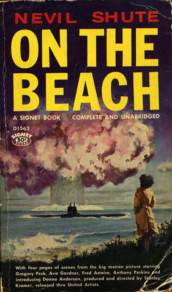

On the Beach is a post-apocalyptic novel published in 1957, written by British author Nevil Shute after he emigrated
to Australia. The novel details the experiences of a mixed group of people in Melbourne as they await the arrival of
deadly radiation spreading towards them from the Northern Hemisphere, following a nuclear war the previous year. As
the radiation approaches, each person deals with impending death differently.Shute's initial story was published as
a four-part series, The Last Days on Earth, in the London weekly periodical Sunday Graphic, in April 1957. For the
novel, Shute expanded the storyline.The story has been adapted twice as a film (in 1959 and 2000) and once as a BBC
radio broadcast in 2008.

Title
The phrase "on the beach" is a Royal Navy term that means "retired from the Service."[5] The title
also refers
to T. S. Eliot's poem The Hollow Men, which includes the lines:
In this last of meeting places
We grope together
And avoid speech
Gathered on this beach of the tumid river.
Printings of the novel, including the first 1957 edition by William Morrow and Company, New York, contain
extracts from Eliot's poem on the title page, under Shute's name, including the above quotation and the
concluding lines:
This is the way the world ends
Not with a bang but a whimper.[6]
The 2000 film ends with a quote from Walt Whitman's poem "On the Beach at Night", describing how a father
comforts his small daughter who is frightened as an approaching cloud bank blots out the evening stars one by
one.[7] Although Whitman's poem resembles the plot of Shute's novel, the book does not reference it, as it does
Eliot's poem.
Plot
The story is set primarily in and around Melbourne, Australia, in 1963. World War III has devastated most of the
populated world, polluting the atmosphere with nuclear fallout, and killing all human and animal life in the
Northern Hemisphere. The war began with a nuclear attack by Albania on Italy, and then escalated with the bombing of
the United States and the United Kingdom by Egypt. Because the aircraft used in these attacks were obtained from the
Soviet Union, the Soviets were mistakenly blamed, triggering a retaliatory strike on the Soviet Union by NATO.
There is also an attack by the Soviets on the People's Republic of China, which may have been a response to a
Chinese attack aimed at occupying Soviet industrial areas near the Chinese border. Most, if not all, of the bombs
included cobalt to enhance their radioactive properties.
Global air currents are slowly carrying the lethal nuclear fallout across the Intertropical Convergence Zone to the
Southern Hemisphere. The only parts of the planet still habitable are Australia, New Zealand, South Africa, and the
southern parts of South America, although they are slowly succumbing to radiation poisoning as well. Life in
Melbourne continues reasonably normally, although the near-complete lack of motor fuels makes traveling difficult.
People in Australia detect a mysterious and incomprehensible Morse code radio signal originating from the American
city of Seattle, Washington. With hope that someone has survived in the contaminated regions, one of the last
American nuclear submarines, USS Scorpion, placed by its captain, Commander Dwight Towers, under Australian naval
command, is ordered to sail north from its port of refuge in Melbourne (Australia's southernmost major mainland
city) to contact whoever is sending the signal. In preparation for this journey, the submarine makes a shorter trip
to port cities in northern Australia, including Cairns, Queensland, and Darwin, Northern Territory; no survivors are
found. Two Australians sail with the American crew: Lieutenant Peter Holmes, naval liaison officer to the Americans,
and a scientist, Professor John Osborne.
Commander Towers has become attached to a young Australian woman distantly related to Osborne, named Moira Davidson,
who tries to cope with the impending end of human life through heavy drinking. Despite his attraction to Davidson,
Towers remains loyal to his wife and children in the United States. He buys his children gifts and imagines their
growing older. At one point, however, he makes it clear to Moira that he knows his family is almost certainly dead,
and he asks her if she thinks he is insane for acting as if they were still alive. She replies that she does not
think he is crazy.
The Australian government provides citizens with free suicide pills and injections so they can avoid prolonged
suffering from radiation poisoning. Periodic reports show the steady southward progression of the deadly radiation.
As communications are lost with a city, it is referred to as being "out."
One of the novel's poignant dilemmas is that of Peter Holmes, who has a baby daughter and a naive wife, Mary, who is
in denial about the impending disaster. Because he has been assigned to travel north with the Americans, Peter tries
to explain, to Mary's fury and disbelief, how to kill their baby and herself, by taking the suicide pill should he
not return from his mission in time to help. The bachelor Osborne spends much of his time restoring and subsequently
racing a Ferrari racing car that he had purchased (along with a fuel supply) for a nominal amount following the
war's outbreak.
The submarine travels to the Gulf of Alaska in the northern Pacific Ocean, where the crew determines that radiation
levels are not decreasing. This finding discredits the "Jorgensen Effect", a scientific theory positing that
radiation levels will decrease at a much greater rate than previously thought, aided by the weather effects, and
potentially allow for human life to continue in southern Australia or at least Antarctica.
The submarine approaches San Francisco, observing through the periscope that the city had been devastated and the
Golden Gate Bridge has fallen. In contrast, the Puget Sound area, from which the strange radio signals are
emanating, is found to have avoided destruction because of missile defences. One crew member, who is from Edmonds,
Washington, which the expedition visits, jumps ship to spend his last days in his home town.
The expedition members then sail to an abandoned navy communications school south of Seattle. A crewman sent ashore
with oxygen tanks and protective gear discovers that although the city's residents have long since perished, some of
the region's hydroelectric power is still working due to primitive automation technology. He finds that the
mysterious radio signal is the result of a broken window sash swinging in the breeze and occasionally hitting a
telegraph key. After a brief stop at Pearl Harbor, the remaining submariners return to Australia to live out what
little time they have left.
Osborne takes his suicide pill while sitting in his beloved racing car. When Mary Holmes becomes very ill, Peter
administers a lethal injection to their daughter. Even though he still feels relatively well, he and Mary take their
pills simultaneously so they can die as a family. Towers and his remaining crew choose to scuttle the Scorpion in
the open ocean, fulfilling a naval duty to not leave the unmanned vessel "floating about in a foreign port", after
her crew succumbs to suicide or radiation poisoning. Moira watches the submarine's departure in her car, parked atop
an adjacent hilltop, as she takes her suicide pill, imagining herself together with Towers as she dies.